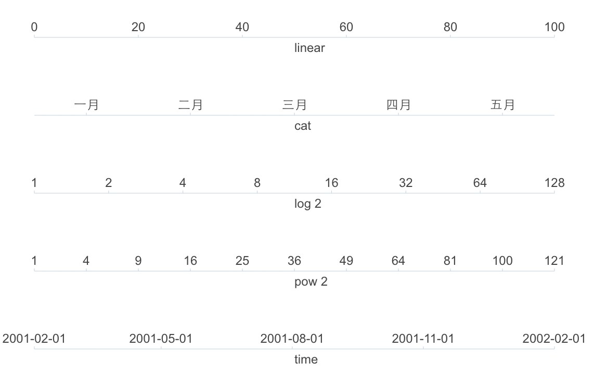

教程
什么是度量
度量（Scale）控制着数据到图形属性的映射，每一个图形属性（Attr）都对应着一个度量。可以这么理解度量：即一个从数据空间的某个区域（度量的定义域）到图形属性空间的某个区域（度量的值域）的一个函数。每种度量的定义域都对应着提供给这个度量的变量的取值范围，而值域则包含了我们可是感知的图形属性：位置、颜色、形状、大小等。
而在G2中，度量的具体处理方式是将数据统一转换到 [0,1] 这个区间内。当然不同的数据类型的转换方法各不相同，但都有以下功能：
- scale: 将数据转换到[0,1]之间
- 有 0,1,2,3,4,5,6,7,8,9,10 几个数值，最大值 10,最小值 0 通过度量转换后，变成 0,0.1,0.2....0.9,1
- 有 '男','女' 2个分类数据，通过度量转换后变成 0 ,1
- invert: 将 [0,1] 之间的数据翻转回原始数据
- 将数据从 [0,1] 之间的 0,0.1,0.2....0.9,1翻转回到 0,1,2,3,4,5,6,7,8,9,10的原始数据
- 将数据从 0,1 翻转成 '男','女'
度量作为数据的属性，所以需要在用户指定数据源时，一起设置。
var data = [
{a: 'A', b:100},
{a: 'B', b:13},
{a: 'C', b:24},
{a: 'D', b:1}
];
var defs = {
a: {
type: 'cat' // 设置度量的类型，为分类 cat
},
b: {
min: 0, // 设置最小值
max: 100 // 设置最大值
} // 如果没有具体声明字段的度量类型，G2 会根据数值的类型自己判断，这里为 linear 连续数值类型
};
chart.source(data, defs);度量的类型
根据数据的类型，G2 支持以下几种度量类型：
- identity，常量类型的数值，也就是说数据的某个字段是不变的常量；
- linear，连续的数字 [1,2,3,4,5]；
- cat，分类, ['男','女']；
- time，连续的时间类型；
- timeCat，非连续的时间，比如股票的时间不包括周末或者未开盘的日期；
- log，连续非线性的 Log 数据 将 [1,10,100,1000] 转换成[0,1,2,3]；
- pow，连续非线性的 pow 数据 将 [2,4,8,16,32] 转换成 [1,2,3,4,5]。

改变度量的类型
默认情况下 G2 会根据数据集中每个属性的第一个数据的类型来自动生成度量的类型，但是用户也可以根据自己的需求进行自定义，这里我们称这个操作为“列定义”。如下所示，我们的列定义是作为 chart.source(data, colDefs) 的第二个参数传入的。
chart.source(data, {
'a': {
type: 'cat' // 指定该列数据的类型为 cat
}
})另外还可以为列定义配置更多的信息，当然针对不同的度量类型，配置项有所不同，如下所示：
var defs = {
'a': {
type: 'time', // 指定 time 类型
mask: 'yyyy-mm-dd HH:MM:ss' // 指定时间的输出格式
},
'b': {
type: 'linear', // 指定 linear 连续类型
min: 0 // 指定度量的最小值
},
'c': {
type: 'cat', // 指定 cat 分类类型
values: ['一月','二月','三月'] // 重新指定 c 属性每一个的值
}
};
chart.source(data, defs);更详细的配置和使用，请参见 Scale API。
示例
var data = [
{"value":10,"time":"2015-03-01T16:00:00.000Z"},
{"value":15,"time":"2015-03-01T16:10:00.000Z"},
{"value":26,"time":"2015-03-01T16:20:00.000Z"},
{"value":9,"time":"2015-03-01T16:30:00.000Z"},
{"value":12,"time":"2015-03-01T16:40:00.000Z"},
{"value":23,"time":"2015-03-01T16:50:00.000Z"},
{"value":18,"time":"2015-03-01T17:00:00.000Z"},
{"value":21,"time":"2015-03-01T17:10:00.000Z"},
{"value":22,"time":"2015-03-01T17:20:00.000Z"}
];
var chart = new G2.Chart({
id : 'c1',
width : 800,
height : 400
});
var defs = {
'time': {
type: 'time',
nice: false,
mask: 'yyyy-mm-dd HH:MM:ss'
}
};
chart.source(data,defs);
chart.line().position('time*value').color('red');
chart.render();更多
本章我们了解了度量 Scale，在使用 G2 过程中，通常还需要对数据进行各种统计操作，为此 G2 提供了一系列方便的统计函数，让我们开始下一章节统计分析的学习吧。